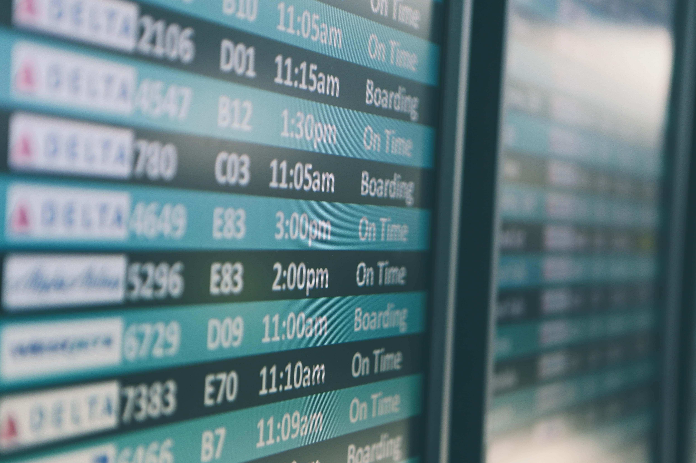

Onboardings exitosos y catástrofes aéreasSuccessful onboardings and air disasters

Son casi 10 años de experiencia profesional y 7 empresas. En este tiempo han cambiado muchas cosas. Otras no. Otras se han ido reafirmando con el paso del tiempo, según las he ido repitiendo y viendo alrededor. Y una de las que tengo más presente es lo difíciles que son los primeros días en una empresa y la importancia que se le debe dar a los procesos de onboarding.
Los días más difíciles de mi vida profesional con diferencia han sido los primeros días en una empresa. Empezar de cero, sin conocer a nadie, sin referencias, sin saber qué vas a encontrar, qué vas a hacer, si acertaste o si vas a ser capaz de tener éxito. Y es algo que, al menos para mí, no mejora con los años. Cada vez me conozco más, pero una parte de quién soy es lo que los demás piensan de mí. Y volver a empezar en un lugar donde no me conocen es perderme y dudar de si volveré a ser todo lo que era o me quedaré por el camino.
A pesar de que siempre han sido muy duros, lo que sí me ha dado la experiencia es la seguridad de que estos primeros días pueden ser más o menos difíciles según la consciencia y la voluntad que ponga la empresa en el proceso de onboarding. También según la empatía de los compañeros que tengas alrededor.
En este tiempo he vivido algunos onboardings exitosos y auténticas catástrofes aéreas. También he participado, primero como compañero y más tarde como líder de equipo, invirtiendo mucho esfuerzo en mejorar estas experiencias. Por eso me gustaría aportar mi granito de arena, contando lo que he vivido y mi visión actual de los onboardings, para que entre todos les demos la importancia que merecen y podamos hacerlos cada día mejor.
La importancia del onboarding
Hace poco leí un artículo de un periódico nacional donde hablaban de los procesos de onboarding. En él mencionaba encuestas donde un 75% de los encuestados contestaron que tenían un mal recuerdo de su fase de incorporación y un 33% que buscaba un nuevo empleo durante los 6 primeros meses. Podéis leer el artículo completo aquí. Estos datos me parecieron muy chocantes, aunque teniendo en cuenta mi experiencia, la verdad que tampoco me sorprendieron.
Si pienso en mis onboardings me he encontrado todo tipo de problemas. Problemas con el contrato, con cláusulas muy restrictivas sobre las que no se había hablado en ningún momento. Problemas con mi equipo de trabajo, el cuál no había llegado o tenía que ponerme a montar o arreglar, o con el acceso a las cuentas de la empresa que necesitaba para trabajar. Amenazas de cierre de proyecto o despido de la plantilla el primer día que me incorporaba. Jefes que no querían ser jefes, directores que no entendían qué hacía allí… Y lo peor de todo era la sensación de abandono y soledad que mencionan en el artículo y que era la que más me dolía y me hacía plantearme si me había equivocado con mi decisión. La mayoría de las veces me he encontrado comiendo solo y sin una interacción social más allá de las necesarias para referirme a documentación durante días y días.
Lo cierto es que de todos mis onboardings sólo podría considerar uno como muy bueno, otro como bueno y otro a medio camino. Y es curioso que, echando la vista atrás y sin haber sido plenamente consciente hasta ahora, coincide que mis mejores onboardings fueron mis experiencias más largas y los peores las más cortas.
El onboarding es la primera impresión que recibes de una empresa y, como suele decirse, no tendrás una segunda oportunidad para causar una primera buena impresión. Es una impresión que marca las expectativas, confianza y motivación para comenzar una nueva etapa y que es muy difícil de revertir si no es la adecuada.
UPA, Un Paso Adelante
Pensando en los requisitos para un buen onboarding me viene a la cabeza este acrónimo que seguramente pondrá nostálgico a algunos de los que sois de mi generación. Un buen onboarding tiene que conseguir que el empleado de Un Paso Adelante y para ello se debe construir sobre tres pilares:
Ubicación: ubicar al empleado en la empresa explicando la misión, cultura, negocio, organización, departamentos y proyectos que se están llevando a cabo.
Preparación: preparar al empleado dándole las herramientas necesarias para realizar su trabajo, formándole y guiándole en las tecnologías, procesos y proyectos en los que va a participar.
Acompañamiento: acompañar al empleado de manera personal, preocupándose por su bienestar, presentándole oportunidades de conocer a otras personas de la empresa y del equipo y dedicándole tiempo de calidad para construir las relaciones y la confianza.
Estos tres pilares se deben construir desde tres esferas: compañía, equipo y persona. Por ello, creo que no puede haber un buen onboarding sin la implicación de toda la compañía, aunque desde el equipo e individualmente puedas cubrir parte de estos requisitos y conseguir una experiencia bastante superior a la media.
Destacar que para mí, la parte más importante es la de acompañamiento personal. Y creo que es frecuentemente la más olvidada. Aquí podemos tener un gran impacto cualquiera de nosotros teniendo empatía con los compañeros que acaban de llegar, a los que un pequeño gesto como tomar un café o dedicarles una parte de nuestro tiempo en los primeros días puede significar mucho.
También decir que el onboarding no se trata del primer día, ni de la primera semana. Es un proceso más o menos largo dependiendo de la empresa, de al menos varias semanas, y por tanto requiere de un seguimiento y de una revisión contínua. Otro aspecto que suele ser olvidado.
El onboarding perfecto
Partiendo de este marco, por mi experiencia a ambos lados del proceso de onboarding y por los aprendizajes que he tenido en las empresas donde he trabajado, esta sería mi visión personal de un onboarding perfecto:
Antes del onboarding
Mi onboarding perfecto comienza mucho antes del día de incorporación, en concreto, en el proceso de selección. Empieza con un buen proceso de selección en el que has recibido la información general de la empresa y toda la información relevante sobre el puesto. Has sido evaluado en un clima agradable y de confianza y has podido empezar a construir ciertas relaciones.
También has tenido un proceso claro de aceptación de la oferta y contrato. Una carta de compromiso para cerrar con tranquilidad tu etapa anterior y un contrato claro, sin sorpresas y que idealmente te ha sido enviado unos días antes para revisar con tranquilidad y con la oportunidad de preguntar todas las dudas.
Antes de la incorporación has tenido un seguimiento por parte de recursos humanos, del manager o de ambos. En estas primeras comunicaciones se han presentado y explicado cómo será el primer día, con una agenda concreta o al menos un esbozo y acordando una hora concreta de llegada para asegurar que hay alguien esperándote para comenzar.
Tu primer día
El primer día te recibirá una persona de Recursos Humanos. Al llegar os reuniréis en una sala en donde te explicarán la organización de la empresa, cultura y valores. Te presentarán el organigrama para que tengas una idea de la estructura de la empresa, diferentes departamentos y personas clave de cada uno de ellos. Te explicarán los procesos habituales del día a día como horarios, políticas de trabajo, vacaciones, bajas y herramientas asociadas para gestionar tu día a día. Te darán el contrato, que ya habrás podido revisar los días anteriores, y te dejarán unos minutos para que lo leas con tranquilidad y firmes. Después te entregarán tu ordenador y configurarán tu cuenta contigo para confirmar que tienes todo lo necesario para empezar. Algún detalle en forma de merchandising será genial para que empieces a sentirte parte de la empresa. Por último, si es un onboarding presencial, te mostrarán la oficina y te presentarán a las personas que se encuentren allí antes de dejarte con tu equipo.
A continuación será el momento de encontrarte con tu manager y equipo. Tu manager tomará el testigo para hacer un onboarding más cercano a tu trabajo del día a día. Te hará una introducción a la misión del equipo, objetivos, historia, proyectos en los que trabajarás, procesos y herramientas. Esta reunión incluirá una explicación del proceso de onboarding y fijará las expectativas para las primeras semanas. Por último, será el momento de conocer al equipo en un entorno informal, tomando un café presencial o virtual para conoceros personalmente.
El resto del día tendrás tiempo de familiarizarte con tu ordenador, terminar de configurar tus cuentas y empezar a explorar tus herramientas de trabajo, siempre con el apoyo de tus compañeros de equipo. Si se trata de un onboarding presencial, alguien del equipo estará pendiente para invitarte a comer con ellos y presentarte a otras personas de la empresa.
En estos primeros días también será muy útil la figura del buddy o compañero. Una persona ajena al equipo y que conozca bien la empresa, que será un punto más de contacto para preguntarle dudas acerca del día a día y de la empresa en general. Conocer a una persona de fuera de tu cámara de eco también es una ocasión fantástica para conocer y empatizar con otros departamentos cuyo tipo de trabajo es más desconocido para ti y una forma genial de que surjan oportunidades para colaborar. El primer día podrás quedar con tu buddy y tomar un café en un ambiente distendido para empezar a conoceros.
Acabado el primer día, el onboarding no habrá hecho más que empezar. Deben venir muchas más acciones por parte de tu empresa y equipo para asegurar que tu incorporación es un éxito.
Siguientes pasos
Poco tiempo después de incorporarte tendrás la oportunidad de participar en una de las sesiones de onboarding recurrentes organizadas por la empresa. Constarán de una serie de charlas con personas clave de la empresa para las incorporaciones recientes, donde te hablarán de los valores, misión e historia de la empresa y cada uno de los departamentos se presentará explicando cuál es su trabajo y objetivos. El ambiente será distendido para que puedas hacer todas las preguntas que necesites. Según la logística de la empresa podrán ser sesiones grabadas, pero siempre con un punto de contacto cercano para hacer preguntas. Una vez acabadas las sesiones tendrás una visión completa de tu empresa y a lo que se dedica cada unidad de negocio.
En estos primeros días también tendrás diferentes acciones que te ayuden a progresar en tu incorporación mientras conoces y comienzas tu trabajo del día a día. Estas acciones serán de los siguientes tipos:
Meetings: reuniones informales para seguir conociendo a tu equipo y colaboradores cercanos. Por ejemplo, si eres una persona de desarrollo estará bien poder conocer compañeros en el área de QA, producto o diseño. También tener 1:1 con cada uno de tus compañeros de equipo para conoceros personalmente.
Herramientas y tutoriales: acciones centradas en conocer las metodologías y herramientas principales con las que trabajarás. Momentos para explorar por tu cuenta, seguir algún tutorial o juntarte con algún compañero experto en dicha herramienta para que te guíe en su uso.
Formaciones: formaciones acerca de las tecnologías que vas a usar y del propio producto. Es un momento muy bueno para profundizar antes de entrar en el barro. También me parece fundamental en el caso de empresas de producto que conozcas y sepas usar los productos de la empresa como lo haría cualquier usuario.
Hitos personales: dentro de tantas acciones generales es importante ir introduciendo hitos relacionados con el trabajo concreto que vas a realizar para poder empezar a sentirte productivo y parte del equipo. Según tu experiencia y entorno, estos hitos personales pueden ser más o menos acompañados. Aquí podrás hacer tu primera revisión de código, investigar tu primer bug, hacer tu primera tarea de desarrollo, hacer el primer despliegue…
Tu agenda estará bien balanceada entre el tiempo de reuniones y el tiempo libre para enfocarte en lo que quieras. Son días de mucha información en donde una agenda muy concreta puede agobiarte y llegar a un momento de colapso donde no puedas procesar más información. También balancear los momentos de trabajo individual y las acciones colectivas, ya que las acciones con otras personas puede consumir mucha energía. Lo ideal será que tengas una lista de tareas a completar para tener autonomía y poder organizar las tareas según el momento del día y energía.
En los primeros días te juntarás diariamente con tu manager para comprobar cómo va todo y seguir construyendo una relación de confianza. Poco a poco se irán espaciando estas reuniones hasta la cadencia regular que mantendrás normalmente (semanal, bisemanal, …). Recursos Humanos también realizará un seguimiento para comprobar cómo va el proceso y seguir conectado contigo durante toda tu etapa profesional.
El final del onboarding
El onboarding terminará cuando tú y tu manager lo creáis adecuado. En estas primeras reuniones será un tema recurrente a tratar y acordaréis cuando te sientes preparado para dar por finalizado el proceso. El fin del proceso no significa el fin del acompañamiento, aprendizaje ni de la creación de conexiones, ya que me parecen parte fundamental del trabajo, sino el fin de esta primera etapa donde ya te sientes preparado, confiado e integrado en la empresa.
Al finalizar el proceso de onboarding tendrás la oportunidad de dar feedback y sugerir mejoras. Tú acabas de vivir el proceso y no habrá nadie mejor que tú para evaluarlo y hacer que los siguientes onboardings sean aún mejores.
Conclusión
Este sería el onboarding perfecto que me gustaría construir o vivir personalmente. Son muchas cosas, pero lo cierto es que lo básico y fundamental se limita a unas pocas. En concreto, a tomarse realmente en serio el proceso de contratación e incorporación de una persona y tener empatía con el momento vital por el que pasa al iniciar un nuevo trabajo. Preocuparse verdaderamente por la persona. Algo que debería ser de sentido común pero que lamentablemente una vez más es poco común en nuestro mundo profesional.
Espero que nos vayamos dando cuenta de la importancia de estos procesos y del poder que tenemos cada uno de nosotros para mejorarlos. Así, poco a poco, conseguiremos que todos tengamos una experiencia mucho más satisfactoria en estos momentos tan difíciles de nuestra vida profesional.
It's been almost 10 years of professional experience and 7 companies. In that time many things have changed. Others haven't. Others have grown more certain as time has passed, as I've repeated them and seen them all around me. And one of the ones I keep most in mind is how hard the first days at a company are and the importance that should be given to onboarding processes.
The hardest days of my professional life, by far, have been the first days at a company. Starting from scratch, not knowing anyone, with no references, not knowing what you'll find, what you'll do, whether you made the right choice or whether you'll manage to succeed. And it's something that, at least for me, doesn't get better over the years. I know myself more and more, but part of who I am is what others think of me. And starting over in a place where they don't know me means losing myself and doubting whether I'll be everything I once was or fall by the wayside.
Even though they've always been very hard, what experience has given me is the certainty that these first days can be more or less difficult depending on the awareness and the will the company puts into the onboarding process. Also depending on the empathy of the colleagues around you.
In this time I've lived through some successful onboardings and some genuine air disasters. I've also taken part, first as a colleague and later as a team lead, putting a lot of effort into improving these experiences. That's why I'd like to do my bit, sharing what I've lived through and my current view of onboardings, so that together we give them the importance they deserve and can make them better every day.
The importance of onboarding
Recently I read an article in a national newspaper that talked about onboarding processes. It mentioned surveys where 75% of respondents answered that they had a bad memory of their onboarding phase and 33% were looking for a new job during the first 6 months. You can read the full article here. These figures struck me as quite shocking, although given my experience, the truth is they didn't really surprise me.
If I think about my own onboardings, I've run into all kinds of problems. Problems with the contract, with very restrictive clauses that had never been mentioned at any point. Problems with my work setup, which hadn't arrived or that I had to put together or fix myself, or with access to the company accounts I needed to do my job. Threats of the project being shut down or staff being laid off on my very first day. Bosses who didn't want to be bosses, directors who didn't understand what I was doing there… And the worst of all was the feeling of abandonment and loneliness mentioned in the article, which was the one that hurt me most and made me question whether I'd made the wrong decision. Most of the time I found myself eating alone and without any social interaction beyond what was strictly necessary to ask about documentation, for days and days.
The truth is that of all my onboardings I could only consider one as very good, another as good and another as somewhere in between. And it's curious that, looking back and without having been fully aware of it until now, it turns out my best onboardings were my longest experiences and the worst ones the shortest.
The onboarding is the first impression you get of a company and, as the saying goes, you never get a second chance to make a good first impression. It's an impression that sets the expectations, trust and motivation to begin a new chapter, and one that's very hard to reverse if it isn't the right one.
UPA, Un Paso Adelante
Thinking about the requirements for a good onboarding, this acronym comes to mind — one that will surely make some of you from my generation feel nostalgic. A good onboarding has to get the employee to take Un Paso Adelante (a step forward), and to do that it must be built on three pillars:
Ubicación (orientation): orient the employee within the company by explaining the mission, culture, business, organization, departments and projects underway.
Preparación (preparation): prepare the employee by giving them the tools they need to do their job, training and guiding them through the technologies, processes and projects they'll be involved in.
Acompañamiento (support): support the employee on a personal level, caring about their well-being, offering them opportunities to meet other people in the company and on the team, and dedicating quality time to building relationships and trust.
These three pillars must be built from three spheres: company, team and individual. That's why I believe there can't be a good onboarding without the involvement of the whole company, even though from the team and individually you can cover part of these requirements and achieve an experience well above average.
I'd like to stress that, for me, the most important part is personal support. And I think it's frequently the most neglected. This is where any of us can have a great impact by being empathetic with the colleagues who have just arrived — for whom a small gesture like grabbing a coffee or giving them some of our time in the first days can mean a lot.
I'd also say that onboarding isn't about the first day, nor the first week. It's a process that's more or less long depending on the company, of at least several weeks, and therefore it requires follow-up and continuous review. Another aspect that tends to be forgotten.
The perfect onboarding
Starting from this framework, drawing on my experience on both sides of the onboarding process and the lessons I've learned at the companies where I've worked, this would be my personal vision of a perfect onboarding:
Before the onboarding
My perfect onboarding begins long before the start date — specifically, during the hiring process. It begins with a good selection process in which you've received general information about the company and all the relevant information about the role. You've been evaluated in a pleasant, trusting atmosphere and you've been able to start building certain relationships.
You've also had a clear process for accepting the offer and the contract. A letter of commitment so you can wrap up your previous chapter with peace of mind, and a clear contract, with no surprises, ideally sent to you a few days in advance so you can review it calmly and have the chance to ask any questions.
Before starting, you've had follow-up from HR, from the manager, or from both. In these first communications they've introduced themselves and explained what the first day will be like, with a concrete agenda or at least an outline, and agreed on a specific arrival time to make sure there's someone waiting for you to get started.
Your first day
On the first day someone from HR will welcome you. When you arrive you'll meet in a room where they'll explain the company's organization, culture and values. They'll show you the org chart so you get an idea of the company's structure, its different departments and the key people in each of them. They'll explain the usual day-to-day processes such as working hours, work policies, vacation, sick leave and the associated tools to manage your daily routine. They'll give you the contract, which you'll already have been able to review in the previous days, and leave you a few minutes to read it calmly and sign it. Then they'll hand you your computer and set up your account with you to confirm you have everything you need to get started. A little something in the form of merchandise will be great to start feeling part of the company. Finally, if it's an in-person onboarding, they'll show you the office and introduce you to the people who are there before leaving you with your team.
Next it'll be time to meet your manager and team. Your manager will take the baton to do an onboarding closer to your day-to-day work. They'll give you an introduction to the team's mission, goals, history, the projects you'll work on, processes and tools. This meeting will include an explanation of the onboarding process and will set the expectations for the first weeks. Finally, it'll be time to meet the team in an informal setting, grabbing an in-person or virtual coffee to get to know each other personally.
The rest of the day you'll have time to get familiar with your computer, finish setting up your accounts and start exploring your work tools, always with the support of your teammates. If it's an in-person onboarding, someone from the team will make a point of inviting you to lunch with them and introducing you to other people in the company.
In these first days the figure of the buddy, or companion, will also be very useful. Someone outside the team who knows the company well, who'll be one more point of contact for asking questions about the day-to-day and the company in general. Getting to know someone outside your echo chamber is also a fantastic chance to meet and empathize with other departments whose kind of work is more unfamiliar to you, and a great way for opportunities to collaborate to arise. On the first day you'll be able to meet your buddy and grab a coffee in a relaxed setting to start getting to know each other.
Once the first day is over, the onboarding will have only just begun. Many more actions should come from your company and team to ensure that your arrival is a success.
Next steps
Shortly after joining, you'll have the chance to take part in one of the recurring onboarding sessions organized by the company. They'll consist of a series of talks with key people in the company for recent hires, where they'll tell you about the company's values, mission and history, and each department will introduce itself, explaining what its work and goals are. The atmosphere will be relaxed so you can ask all the questions you need. Depending on the company's logistics, they may be recorded sessions, but always with a close point of contact for asking questions. Once the sessions are over you'll have a complete picture of your company and what each business unit does.
In these first days you'll also have various activities to help you progress in your onboarding while you get to know and begin your day-to-day work. These activities will be of the following types:
Meetings: informal meetings to keep getting to know your team and close collaborators. For example, if you're a developer it'll be good to meet colleagues in the QA, product or design areas. Also having 1:1s with each of your teammates to get to know each other personally.
Tools and tutorials: activities focused on getting to know the main methodologies and tools you'll work with. Times to explore on your own, follow a tutorial or pair up with a colleague who's an expert in a given tool so they can guide you through its use.
Training: training on the technologies you're going to use and on the product itself. It's a very good time to go deeper before getting into the weeds. In the case of product companies I also think it's essential that you know and know how to use the company's products the way any user would.
Personal milestones: amid so many general activities it's important to gradually introduce milestones related to the specific work you're going to do, so you can start feeling productive and part of the team. Depending on your experience and environment, these personal milestones can be more or less supported. Here you'll be able to do your first code review, investigate your first bug, do your first development task, make your first deployment…
Your schedule will be well balanced between meeting time and free time to focus on whatever you want. These are days full of information, where a very tight agenda can overwhelm you and push you to a breaking point where you can't process any more. It's also important to balance moments of individual work with collective activities, since activities with other people can consume a lot of energy. Ideally you'll have a list of tasks to complete so you have autonomy and can organize them according to the time of day and your energy.
In the first days you'll meet daily with your manager to check how everything's going and keep building a relationship of trust. Little by little these meetings will be spaced out until they reach the regular cadence you'll normally keep (weekly, biweekly, …). HR will also do some follow-up to check how the process is going and to stay connected with you throughout your professional journey.
The end of the onboarding
The onboarding will end when you and your manager think it's appropriate. In these first meetings it'll be a recurring topic to discuss, and you'll agree on when you feel ready to consider the process complete. The end of the process doesn't mean the end of support, learning or of building connections, since I see those as a fundamental part of the job, but rather the end of this first chapter where you already feel ready, confident and integrated into the company.
When the onboarding process ends you'll have the chance to give feedback and suggest improvements. You've just lived through the process, and there'll be no one better than you to evaluate it and make the next onboardings even better.
Conclusion
This would be the perfect onboarding I'd like to build or experience personally. It's a lot of things, but the truth is that the basics and the essentials come down to just a few. Specifically, to truly taking seriously the process of hiring and bringing on a person, and to having empathy for the moment in life they're going through when starting a new job. Truly caring about the person. Something that should be common sense but that, sadly, once again is far from common in our professional world.
I hope we gradually come to realize the importance of these processes and the power each of us has to improve them. That way, little by little, we'll manage to give everyone a much more satisfying experience in these such difficult moments of our professional lives.